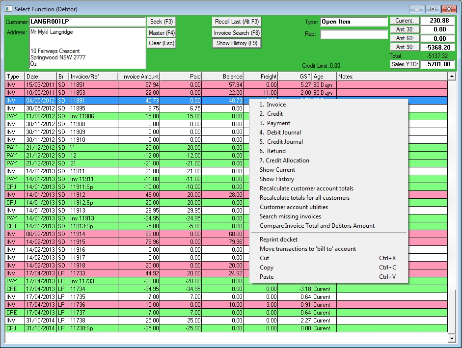

If you right click to bring up the context menu, there are useful functions shown.

| 1. | Invoice Create an invoice record if one is missing. See also Search missing invoices..
|
| 2. | Credit Create a credit note record if one is missing.
|
| 3. | Payment Make a Debtor payment.
|
| 4. | Debit Journal Create a journal record to balance a excess credit.
|
| 5. | Credit Journal Create a journal record to balance a excess debit or forgive a debt.
|
| 6. | Refund Refund an over payment
|
| 7. | Credit allocation This opens the credit allocation window to assign unallocated credits or payments to invoices.
|
Recalculate Customer account totals Recalculates the totals for the selected customer displayed in the top right of the window for Current / 30 / 60 / 90.
Recalculate totals for all customers As above but for all customers.
Customer account utilities Open the Account Utilities window.
Search missing invoices Searched the invoice tables for customer invoices that do not have a matching debtor record.
Compare Invoice total and Debtor Amount Looks fot cases where the invoice total does not match the invoice value recorded in the debtors table.